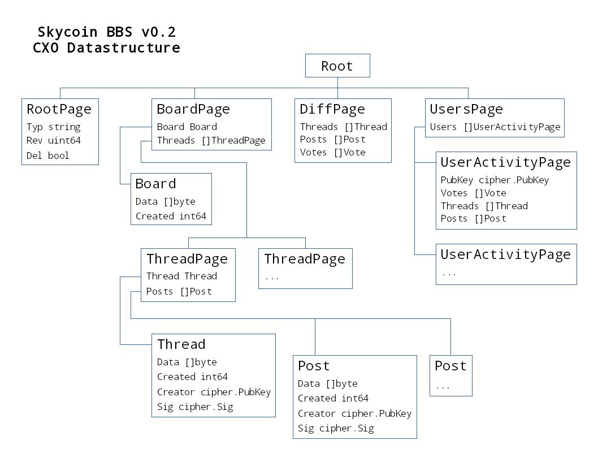

0.1 버전이 출시된 지 한 달이 지났으며, 0.2 버전이 곧 출시될 예정입니다!
변경 사항은 다음과 같습니다:
- 최신 CXO 버전(P2P 자가-복제 데이터베이스)을 사용합니다.
- CXO 객체와 트리의 재구현(새로운 기능을 준비중)
- ‘보여지는’ 컨텐츠의 다양한 방식을 쉽게 구현할 수 있는 ‘뷰’ 모듈 소개
- 사용자 팔로윙/차단의 초기 구현
- UI 개선 완료
CXO 변경
CXO는보다 빠르고 안정적으로 재구현 되었습니다. API의 해시 배열 작업이 개선되었습니다. - 일정 시간 접속 유지, 빠른 복제 및 지정된 해시를 사용하여 요소에 직접 접속할 수 있음.
이러한 변화로 인해 BBS는 코드베이스의 대부분을 변경하게 되었습니다.
CXO 데이터 구조 변경
데이터 구조를 변경하면 다음과 같은 문제를 해결할 수 있습니다:
- 나중에 사용자 데이터를 자신의 별도 루트로 마이그레이션 할 수 있도록 구조 구현
- 루트 시퀀스(일명. 변경)간의 “변경”을 쉽게 결정할 수 있습니다. 이는 뷰를 컴파일하고 최종 사용자에게 실시간 업데이트를 제공하는데 유용합니다.
- 다른 루트 유형에 대한 루트 객체의 유형을 쉽게 결정할 수 있습니다

‘루트 페이지’ 객체는 루트의 유형을 결정합니다. 당분간 모든 데이터는 보드 당 하나의 루트 트리 아래에 축적됩니다. 앞으로 스레드와 사용자는 각각의 고유한 루트를 갖게됩니다.
나중에는 게시판 페이지 스레드가 자체 루트를 가질 것이므로, 스레드에 대한 링크(href) 대신 공개 키 목록을 갖게 됩니다. 따라서 게시판 간의 스레드를 쉽게 마이그레이션 할 수 있습니다.
‘다른페이지’는 ‘게시판 페이지’ 루트에 대한 루트 시퀀스 간의 변경을 결정하는 데 사용됩니다.이것은 본질적으로 증가하는 배열의 집합으로 길이의 증가가 변경으로 해석됩니다.
‘사용자 페이지’는 공개 키 목록이 됩니다.(이것들은 게시판 내의 ‘참여자’와 같습니다.) 각 사용자는 고유한 루트를가집니다.
뷰 모듈 구현
뷰는 단순한 인터페이스입니다:
type View interface {
// Init initiates the view.
Init(pack *skyobject.Pack, headers *pack.Headers, mux *sync.Mutex) error
// Update updates the view.
Update(pack *skyobject.Pack, headers *pack.Headers, mux *sync.Mutex) error
// Get obtains information from the view.
Get(id string, a ...interface{}) (interface{}, error)
}현재 컴파일된 모든 뷰는 메모리에 저장됩니다. 그러나 이것은 사용자 수가 증가할 때는 실용적이지 않습니다. 뷰는 향후 버전에서 디스크의 키-값 저장소에 저장됩니다.
버전 0.2에는 두 가지 뷰 구현이 있습니다; 하나는 내용(게시판/스레드/게시물/투표)을 위한 것이고, 다른 하나는 사용자 당 팔로우/차단 리스트를 컴파일 하는 것입니다.
새로운 사용자 환경
이 게시물의 시점에, 이것은 거의 완료되었습니다. 여기 이 작업 진행현황에 대한 유튜브 비디오가 있습니다:

스카이코인 BBS 개발에 대한 최신 정보를 얻으려면, 이 블로그를 구독하고 텔레그램의 스카이코인 BBS 커뮤니티 에 가입하십시오 .